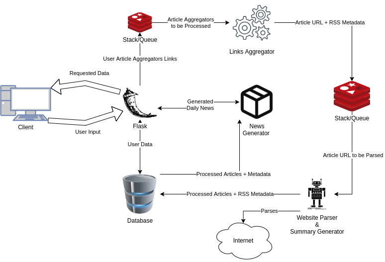

The Papernews Project¶
The papernews is a learning project started in 2021.
Solution architecture¶

Development environment¶
To start developing on the project you should:
Clone the repo if you haven’t already : git clone @github.com:triglex/papernews.git
Create and activate a new virtual environment: ?
Install development requirements pip3 install -r requirements-dev.txt
Run tests to check if everything is working make ci
Deployment¶
Todo.
Specification¶
Table of contents
Description purpose of Papernews
Components
Interaction between components
Estimated time and cost
Description and purpose of Papernews¶
Papernews is an application for generating short summary from given news agregators or directly from a newsletters web sites. The user can define which news he wants to follow and the application will generate new Papernews at the end of each day. The user will be given the Papernews as portable document format that he can recieve via e-mail or he can chose to download it.
Components¶
Papernews has the following components:
Database
Web interface
Links aggregator
Website parser
Daily news generator
Web interface¶
User can see a landing page that describes Papernews features. User can register, login remove or edit his account. If user is logged in, he will be able to access the news page. On the news page, user can filter different sources of article aggregators (news providers). There are multiple options to filter by:
default article aggregators (hackernews, reddit)
custom user provided article aggregators
category (multiple premade article aggregators) for eg. sports, politics
specific daily news genereted for the chosen hour
User can also search articles by:
article id
- web interface will create short article ID that will ease access to the
news if user printed his daily news on paper.
- for example below the heading of one news there will be an ID like
“123abcd” and user will be able to search that news by ID or access https://papernews.com/short/123abcd to view that specific news article.
article date created
article keywords
article category
User can choose between different templates (looks) for generating daily news. User can get his generated daily news:
via e-mail
as HTML
as PDF
Web interface TODO…
Links aggregator¶
This component parses article aggregators for articles and metadata about them. It can parse 2 different types of feeds:
Feed with the RSS
Feed without the RSS
If aggregator has the RSS for its feed, component will use feedparser. Using parser, it extracts:
article heading
user that posted that link
link to thread on aggregator
link to actual article
Otherwise, if the user provided a link to an article aggregator that doesn’t support the RSS, in-house parser will be used for extraction of same metadata as if feedparser was used.
After parsing it sends ready to be scraped articles with metadata to flask which writes it to the database.
Links aggregator can be horizontaly scaled if needed.
Website parser¶
Using prepared links scrapes website for summary, image etc. of that article. After scraping reports prepared blob of data back to the flask api. In first iteration smmry will be used to summarize article body, later if we get more budged, in-house natural language processing alghorithms will be used to get summary of article body.
Website parser can be horizontaly scaled if needed.
Daily news generator¶
Generates daily news in HTML format. While generating, generator will create codes for each of the articles and original threads where article was posted so that user can use those in a form of a url shortener. For example user can input code 123456 in search and get redirected to actual article that had that 123456 generated in daily news. Codes are permanently attached to link.
If needed and budged is granted, generator can be created in such way to support horizontal scaling.
Application deployment¶
Deployment of the Papernews applcaiton
Interaction between components¶
Estimated time and cost¶

Estimated cost for 22 days of 2 developers is
22 days * 8h * 2 developers - 352, since our cost is $35/h the cost of programming and designing is $12320.
Maintance 10h - $350
Overhead 4h - $140
Total of $12810
Work Breakdown Structure (WBS)¶
Develop project schedule | (Estimate 2h BC/4h WC) | I1
- Database | (Estimate 4h BC/8h WC)
Database diagram | (Estimate 4h) | I1
- Web interface | (Estimate 41h BC/80h WC)
- Papernews Frontend | (Estimate 17h)
- Landing page | (Estimate 5h)
SEO (search engine optimizaion) | (Estimate 4h) | I3
Page that describes Papernews features | (Estimate 1h) | I2
- Design and implementation of Papernews templates | (Estimate 6h)
Custom templates design | (Estimate 3h) | I1
Custom templates implementation | (Estimate 3h) | I2
- Static parts of Papernews | (Estimate 6h)
User pages (Login, Register, User profile) | (Estimate 3h) | I1
Base layout (news checkbox filter, navbar) | (Estimate 3h) | I1
- Papernews Backend | (Estimate 24h)
- User operations | (Estimate 3h)
User CRUD and autentication on Papernews application | (Estimate 3h) | I1
- News operations | (Estimate 21h)
User defined sources of news (in form of links/custom urls) | (Estimate 10h) | I2
Search (by date, name, keywords,…) | (Estimate 5h) | I2
Unique short id generator for news and daily news | (Estimate 1h) | I2
Per hour frontpage generator | (Estimate 1h) - @kelj0 | I2
Export of daily news in desired format | (Estimate 3h) | I1
Subscription filter | (Estimate 1h) | I1
- Links agregators | (Estimate 12h BC/20h WC)
Metadata extractor from RSS | (Estimate 2h) | I1
Metadata extractor for websites without RSS support | (Estimate 10h) | I2
- Website parser | (Estimate 16h BC/25h WC)
Global scraper for key metadata (key = crucial parameters from which the Papernews content will be generated, parameters are: html.body, html.title, html.p) | (Estimate 8h) | I1
Integration with “smmry” from scraped data (scraped in step 2.) | (Estimate 8h) | I2
- Deployment | (Estimate 10h BC/15h WC)
Application deployment | (Estimate 10h) | I3
Iterration estimate¶
I1 estimate 32h BC / 60h WC
I2 estimate 39h BC / 80 WC
I3 estimate 14h BC / 20 WC